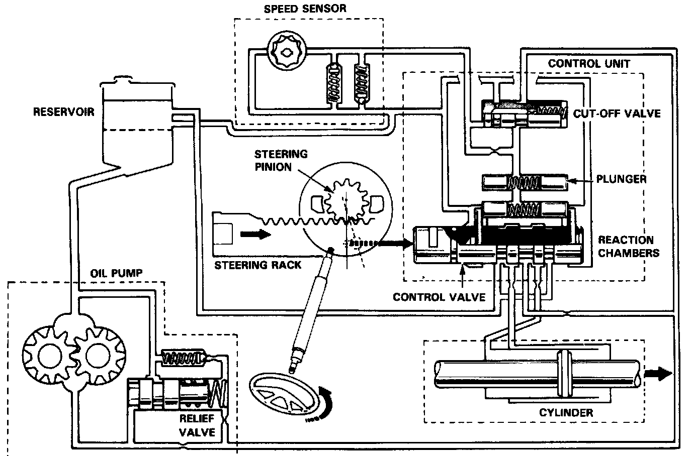

Steering: Description and Operation

Fluid Flow and Interconnect Diagram
The reservoir supplies power steering fluid to the pump; the pump pressurizes the fluid to about 8000 kPa (1200 psi), and delivers it through a high pressure hose to the control unit on the gearbox.
The control valve (in the control unit) controls the direction of the turn by shifting fluid to the left or right side of the piston on the rack (in the power cylinder). The cut-off valve, also in the control unit, controls the amount of assist by regulating the stroke of the control valve.
Fluid returning from the power cylinder flows back through the control valve and out to the reservoir through the cooler.
Fluid flow from the cut-off valve to the reservoir is controlled by the speed sensor; this varies the assist by regulating fluid pressure in the control unit according to the speed of car.